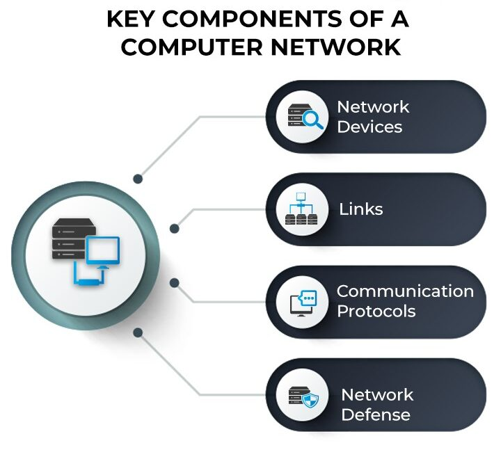

What Is a Computer Network?
A computer network is a system that connects two or more computing devices for transmitting and sharing information. Computing devices include everything from a mobile phone to a server. These devices are connected using physical wires such as fiber optics, but they can also be wireless.
The first working network, called ARPANET, was created in the late 1960s and was funded by the U.S. Department of Defense. Government researchers used to share information at a time when computers were large and difficult to move. We have come a long way today from that basic kind of network. Today’s world revolves around the internet, which is a network of networks that connects billions of devices across the world. Organizations of all sizes use networks to connect their employees’ devices and shared resources such as printers.
An example of a computer network at large is the traffic monitoring systems in urban cities. These systems alert officials and emergency responders with information about traffic flow and incidents. A simpler example is using collaboration software such as Google Drive to share documents with colleagues who work remotely. Every time we connect via a video call, stream movies, share files, chat with instant messages, or just access something on the internet, a computer network is at work.
Computer networking is the branch of computer science that deals with the ideation, architecture, creation, maintenance, and security of computer networks. It is a combination of computer science, computer engineering, and telecommunication.
